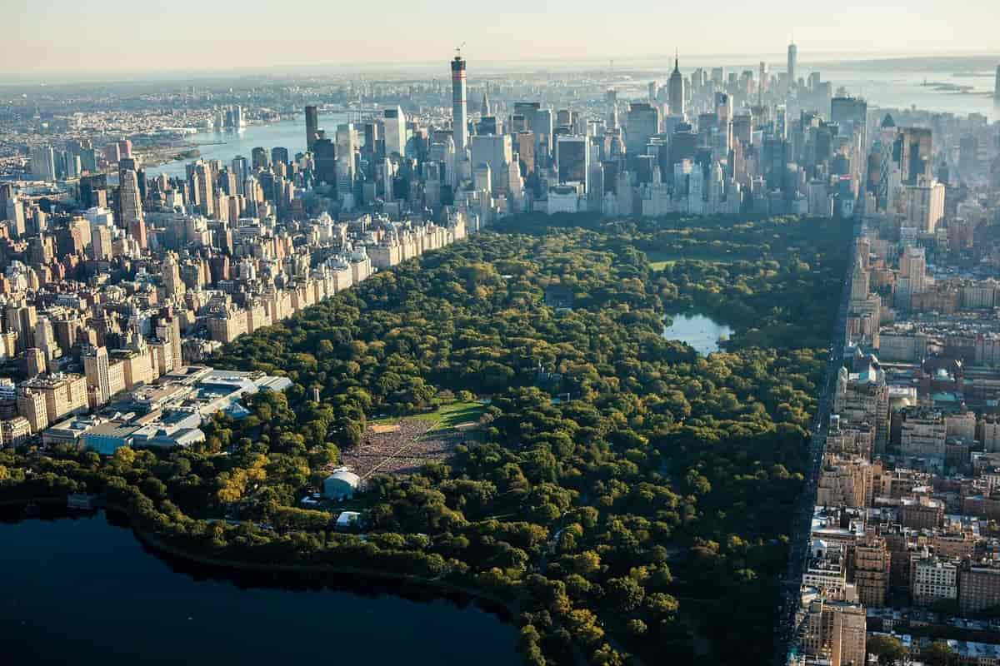
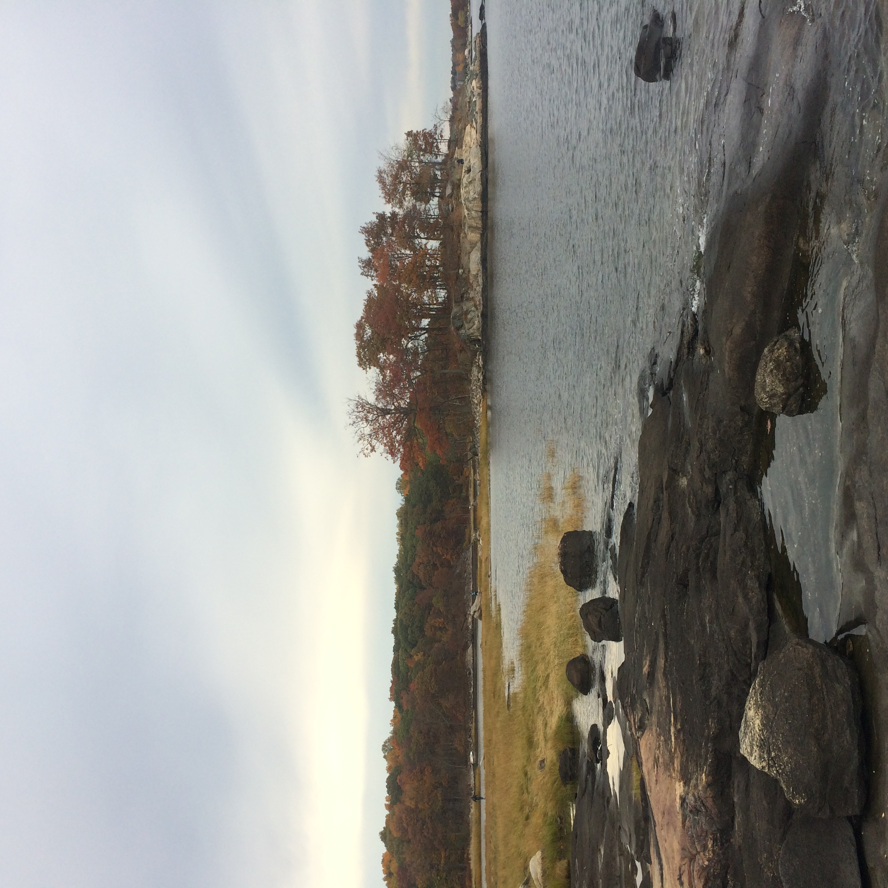

There are more than 1,700 parks, playgrounds, and recreation facilities across the five boroughs. (NYC Parks)
Central Park is the fifth largest park at 843 acres. The largest park in NYC is the Pelham Bay Park in the Bronx. (NYC Parks)
Central Park  and Pelham Bay Park 